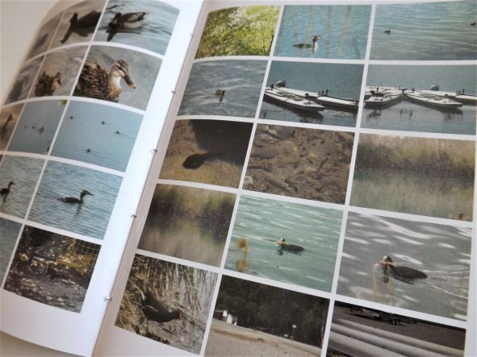
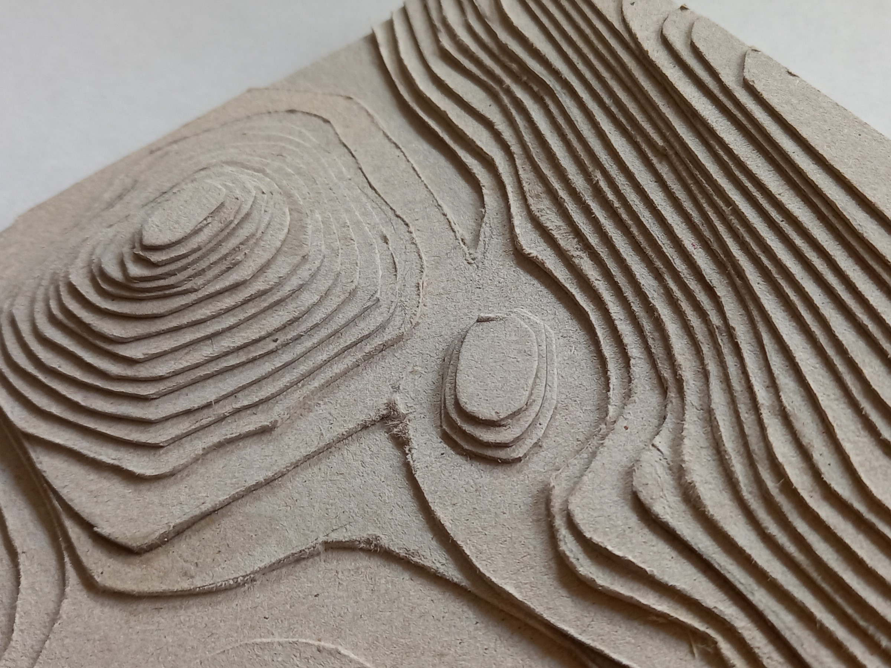
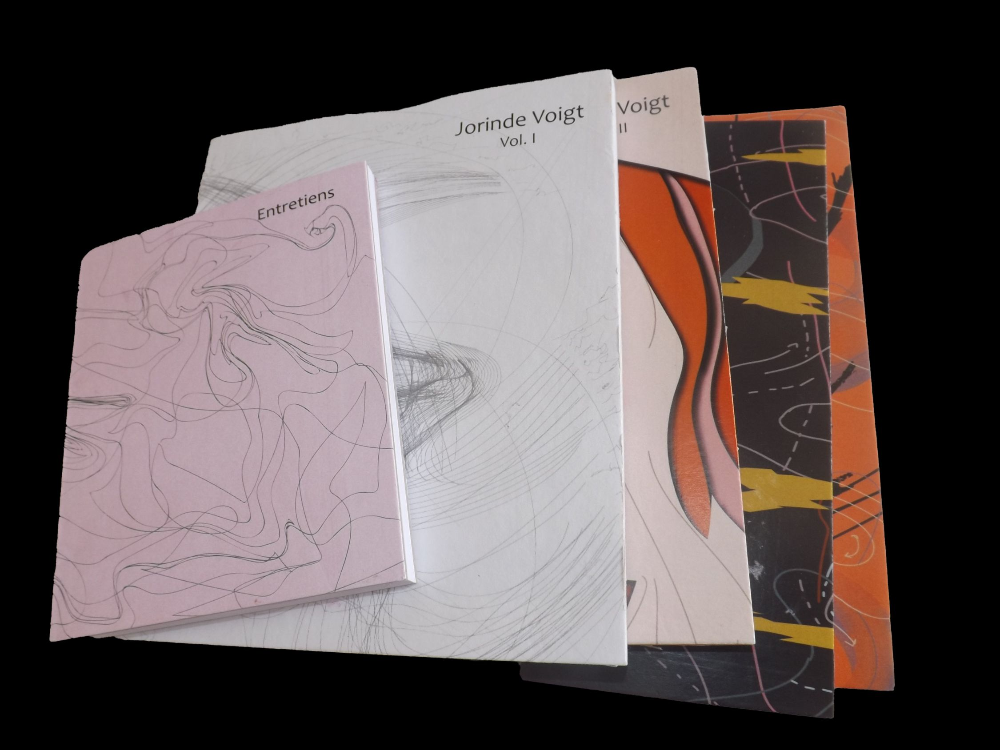

2023 École du Cirque Jules Vernes
Ce travail est basé sur mon expérience lors de ma visite de l’école de cirque d’Amiens. Je me suis concentré sur les femmes effectuant des acrobaties sur le tissu. J’étais en admiration devant toutes les personnes de l’école et je l’ai exprimé à travers une citation de La Tempête de William Shakespeare.
(12 pages, 18 X 26 cm)
2023 Ö lait (logo design)
À partir du nom de la rue la fosse au lait, j’ai imaginé une franchise de lait : « Ö lait ». Pour le logotype j’ai choisi de mettre en relation la vache et le verre de lait, à travers des formes simples mais impactantes qui mènent à l’éssentiel. La police Cooper Black apporte une dimension ludique et accessible.
2023 Crescendo
Une micro-édition appelée « Crescendo » est une collection de polices de caractères provenant de différents livres. Le nom a été choisi pour exprimer une progression : on passe de polices fines aux épaisses. La progression est très subtile, d’où le nom de crescendo.
(120 pages, 14.8 X 21 cm)
2022 Définition du Graphiste
Travial en collaboration avec un ami coréen réalisé en risographie. Nous avons élaboré une définition du graphiste en français. Comme le français n’est ni l’une ni l’autre de nos langues maternelles, nous avons travaillé ensemble les trois langues (français, anglais et coréen) pour trouver un équilibre et une définition.
(29.7 X 42 cm)
2022 Projet Alice Prototype
Il s’agit d’un prototype sur lequel j’ai travaillé à trois pour le Projet Alice. Il s’agit d’une campagne allemande et autrichienne qui souhaite sensibiliser à la cruauté envers les animaux. On nous a fourni des textes écrits et nous avons dû illustrer les histoires et la couverture. L’espacement dans le livre à été un réel sujet, pour conserver un équilibre entre texte et dessins en pleine page.
(48 pages, 22 X 33 cm)
2022 Cram
Trois affiches typographiques inspirées d’un mot anglais : « Cram ».
(40 X 60 cm)
2022 Brandt Rhapsodie
« Je pense qu’il reste une moitié de pizza quelque part, mais vérifie la date sur la boîte » - Brandt Rhapsodie, Benjamin Biolay
J’ai cherché à représenter la différence et la séparation du couple. Tout ce qui reste est la boîte, la graisse, les miettes et les marques de l’endroit où se trouvait la pizza. En écoutant la chanson, on dirait les restes d’un couple et de leur amour. Les SMS peut être comparé aux miettes de pizza laissées dans la boîte.
(33 X 33 cm)

2022 Les Vannades
Une continuation du projet Vannades. Un travail sur les formes graphiques.
(60 X 80 cm)

2022 Les Vannades
Une étape de recherche pour mon projet autour d’un lieu que j’ai choisi : un lac situé à Manosque appelé Les Vannades. C’est un petit livre qui montre tout ce que j’ai récolté chaque jour passée là-bas. Il y a principalement des photos, mais il y a aussi mes notes, prises sur le moment, des frottages et une palette de couleurs.

2022 Brill
Une affichette de mon spécimen faite en risographie.
(21 X 29.7 cm)

2022 Brill
Un spécimen pour la police Brill. Il comprend les glyphes et le texte dans différentes langues et alphabets.
(68 pages, 18.8 X 21 cm)

2022 Calanques
Une section des Calanques de Marseille construite strate par strate à l’aide de carton gris.
(25 X 25 cm)

2022 Coffret d'Artiste
La boîte pour le contenu du livre d'artiste.

2022 Coffret d'Artiste
Un coffret pour l’artiste Jorinde Voigt. Il s’agit d’une recherche et d’une étude sur Jorinde Voigt. Elle est composée de cinq livres, l’un contenant quatres interviews de l’artiste et les autres couvrent différents thèmes abordés par l’artiste : noir et blanc, couleur, collage et or.
(366 pages en totale)

2022 Animal
Un livre issu d’un projet photographique que j’ai appelé « Animal ». Il contient des fragments d’animaux en gros plan qui forment une oeuvre abstraite, laissant place à l’imaginaire et à la contemplation des formes. C’est également un travail graphique qui joue avec les motifs et textures propre à chaque animal.
(40 pages)

2021 Projet Scrabble
Un projet visant à compléter les pièces d'un jeu de société de Scrabble en incluant différentes polices de caractères. Mais lettres étaient : L, E, G, O et j'ai utilisé la police "Centaur".

2021 Affiches
Cinq affiches inspirées d’une séries de mots. Il s’agissait d’un projet visant à unir texte et images.
(60 X 80 cm)

2021 Pangramme
Création d'une police de caractères. Avec seulement quelques lettres, j'ai imaginais la suite de l'alphabet.

2021 Petit Dépliant
A travers la téchnique de la risographie, j'ai réalisé un mini dépliant de l'artiste manga Junji Ito.